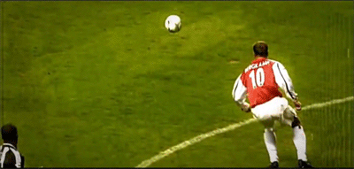

Las imágenes es bastante común encontrarlas relacionadas con la etiqueta de los enlaces para provocar dos comportamientos muy extendidos. Estos son dos fundamentalmente:
Imagen cómo máscara del enlace
< a href="http://www.google.es" target="_blank"> <img src="imagen.jpg" />< /a>
Imagen que conecta con otra imagen (generalmente ampliada))
< a href="imagen_gran.jpg" target="_blank"> <img src="imagen_pq.jpg" />< /a>
También es bastante común la necesidad de dejar trasparentes algunas partes de la imágen con el objetivo de
respetar las imágenes o colores de fondo que hallamos puesto para toda la página web. Las imágenes con zonas
transparentes estan en formato *.gif o *.png que son los que conservan dicha particularidad si
creas zonas transparentes en las imágenes y las guardas en formato *.jpg te seguiran apareciendo con fondo
blanco.
Imagen sin transparencia Imagen con trasparencia
Para crear zonas trasnparentes en una imágen necesitas alguna aplicación que te permita seleccionar sobre la imágen el color a "transparentar" y una vez realizada la operación guardarla en el formato adecuado. Evidentemente para apreciar el efecto es necesario disponer de al menos algún color de fondo para la página, y que en ésta ocasión y dado que no hemos visto CSS, lo haremos directamente agregando el atriuto bgcolor="#RRGGBB" en la etiqueta <BODY>

También es posible la creación de efectos e imágenes animadas con multitud de herramientas online, prueba a crear alguno con algunas de éstas aplicaciones online:- http://www.online-image-editor.com/
- http://picasion.com/es/
- Para el tratamiento de imágenes online (Photopea)